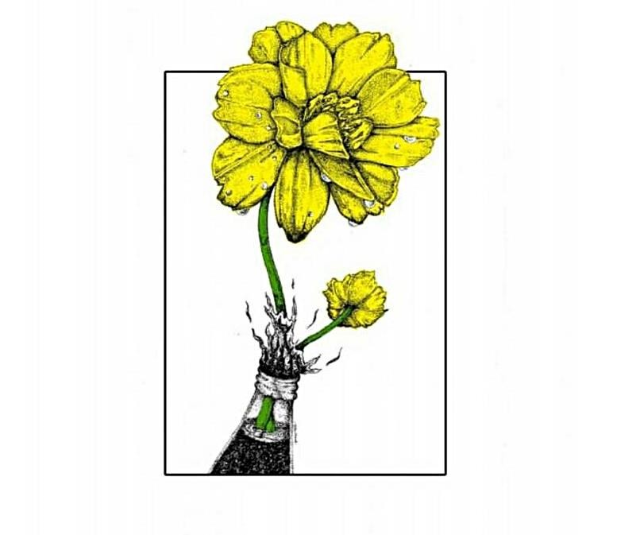

Pengantar

Berangkat dari hasrat menggebu-gebu untuk memperbaiki tatanan masyarakat yang rusak dan tidak adil, serta betapa kecewanya melihat masyarakat berkompromi dengan situasi, saat ini kita menyaksikan sendiri peningkatan signifikan intelektual muda di perguruan tinggi yang mulai menggandrungi gagasan sosialisme libertarian.
Ia muncul dari hasil refleksi berulang kali terhadap kegagalan proyek revolusioner kiri orthodoks yang otoritarian dan tidak etis itu.
Kritik Plekhanov, Lenin, Trotsky dan kamerad orthodoks yang lain terhadap kita mungkin ada benarnya.
Kecenderungan disorganisasional di kalangan sosialis libertarian telah membawa kekecewaan yang lebih tragis terhadap berbagai percobaan untuk menciptakan perubahan sosial yang lebih baik.
Revolusi memang tercipta secara spontan, tapi revolusi tidak mungkin berhasil dengan cara-cara yang sporadis.
STUDENT UNITE ! ONE BIG FEDERATION !
Pembentukan
Apa indikator yang bisa kita gunakan untuk menentukan bahwa kita telah siap untuk membentuk federasi? Apa itu siap? Mungkin anda dapat mengecap saya sebagai seorang yang bersemangat dan terburu-buru.